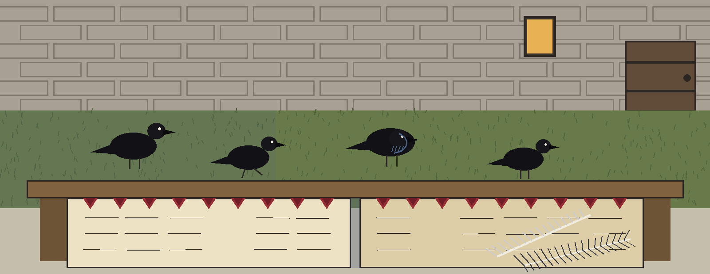
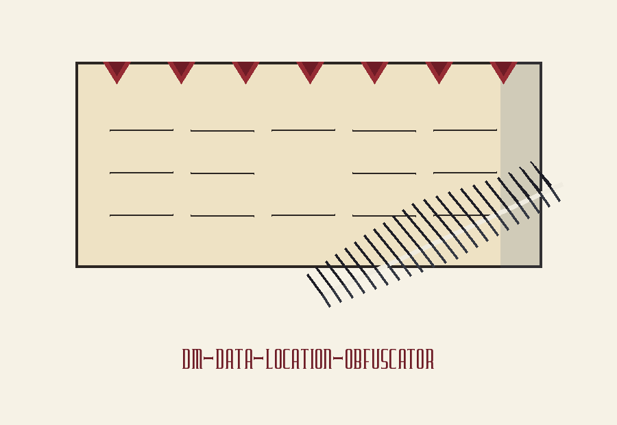
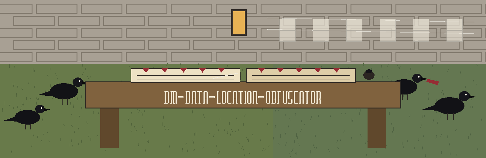

dm-data-location-obfuscator: The Beefeater's Raven Ledger
Wherever this site names itself, it uses the joined form dm-data-location-obfuscator: The Beefeater's Raven Ledger, repository first, theme second. The page is laid out as the yard ledger itself, turned leaf by leaf.



♟ A raven marker opens each leaf below.
Points to Generate
♟ Leaf one: the task
The program adds random noise to geographic coordinates, latitude and longitude, inside a dataset, keeping the general location while hiding exact addresses, and it uses a specified radius for that noise. The tool belongs with tools designed to generate or mask sensitive data with realistic looking but meaningless values.
♟ Every Pair Stays in Bounds
Every printed pair remains a valid coordinate. Latitude gets clamped into the minus 90 to 90 range, longitude gets wrapped into the minus 180 to 180 range, so points near the poles or beyond the antimeridian stay inside bounds. At a latitude whose cosine is near zero, meaning at the poles themselves, the longitude offset is left at zero rather than divided by that near zero cosine. No sample pair, no town, and no address is printed on this leaf or anywhere on this site.
♟ The Printed Address Names an Older House
git clone https://github.com/ShadowGuard-AI/dm-data-location-obfuscator
The line above is a correction. The address printed in the README names a predecessor organisation, so following that printed address literally reaches the wrong house. The corrected line gives the organisation name with its hyphen, as it should. It is marked as a correction here and is never dressed up as the original text.
♟ Leaf four: the invocation shape
./dm-data-location-obfuscator [params]
That shape is all this leaf shows: program first, bracketed parameters after. The ruled lines below are left blank on purpose: no input file from anyone, no radius figure invented, and no point count promised beyond what the controls leaf records.
♟ Leaf five: the controls, in README order
Help first: the flag -h shows the help message and exits. Then a flag printed only as -v, whose source line says no description was provided, and this leaf repeats that absence rather than guessing a meaning for it. Then -n, the number of obfuscated points to generate.
♟ Leaf six: two licence facts, kept apart
First stands the repository LICENSE file itself: MIT terms, its holder described by outline only: a pen name first, then a bracketed given name cut down to one initial, then the handle in parentheses. The full wording of that holder line is not reproduced here.
Second, labelled as a site correction: the README closing line respelled with the current hyphenated organisation where the published line used the predecessor name reads: Copyright (c) ShadowGuard-AI. Site correction.
The preserved README record
 # dm-data-location-obfuscator Adds random noise to geographic coordinates (latitude/longitude) within a dataset, preserving general location but obscuring exact addresses. Uses a specified radius for the noise. - Focused on Tools designed to generate or mask sensitive data with realistic-looking but meaningless values Every printed pair is a valid coordinate. Latitude is clamped into the -90 to 90 range and longitude is wrapped into the -180 to 180 range, so points near the poles or past the antimeridian stay in range. At a latitude whose cosine is near zero (the poles themselves), the longitude offset is left at zero instead of being divided by that near zero cosine. ## Install `git clone https://github.com/ShadowStrikeHQ/dm-data-location-obfuscator` ## Usage `./dm-data-location-obfuscator [params]` ## Parameters - `-h`: Show help message and exit - `-v`: No description provided - `-n`: Number of obfuscated points to generate. ## License Copyright (c) ShadowStrikeHQ